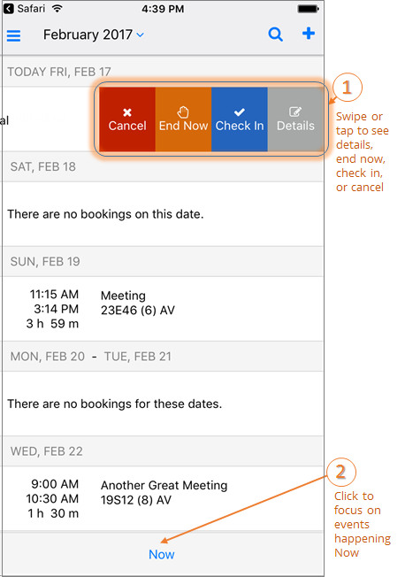

End a Meeting Early
If your meeting has taken less than the reserved time, you can End a meeting early to release the space for others.
You can End a Meeting early in one of two ways:
- From the Calendar on the Home Page:
- Locate the meeting on the Calendar that you want to End Now.
- If you are able to end the meeting, an End Now option will appear when you swipe right. The meeting organizer or booking template determines whether this option is available.
- By Editing the Event:
- Tap on the event and click Edit in the upper right-hand corner.
- Click End Now.
-
-

- You can also End a meeting by opening and/or editing an event.
-
See Also: Invite People